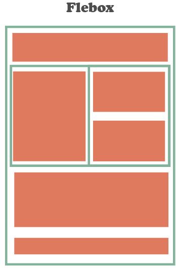

Proposito del Sitio
Aqui se escribe el proposito del sitio, el tema que me toco, flexBox
FlexBox
Flexbox: es un diseño unidimensional que puede colocar elementos horizontal o verticalmente (pero no ambos). Un elemento que usa flexbox como diseño se conoce como contenedor flexible , y los elementos dentro de él son elementos flexibles.
Attardi, J. (2020). Flexbox. In Modern CSS (pp. 205-228). Apress, Berkeley, CA

Listas
Se utilizan para agrupar información parecida o relacionada en una web.
Permiten a los visitantes tener acceso grupos de información de manera rápida y sencilla.
Se puede incluir cualquier cosa en las listas, desde enlaces hasta enumeraciones.
hay 4 tipos de listas las cuales son: numeradas, sin numerar (con viñetas), listas anidadas (Listas dentro de otras) y listas de definiciones.
Prescott, P. (2015). HTML 5. Babelcube Inc..
Enlaces
Enlaces: Son aquellos medios que nos permiten enlazar varios textos de forma facil y sencilla.
A este enlace se le denimina como Link.
un enlace es facilmente detectado, solo basta con pasar el mouse por encima de el. Generalmente estos enlaces aparecen subrayados y de color azul.
Se clasifcan en:
Internos: Te dirigen a otra parte dentro de la misma pagina
Locales: Te direccionan a otras paginas del mismo sitio
Remotos: Te direccionan a otros sitios web
Con direcciones de correo: Para crear un mensaje de correo dirigido
Con archivos: Para que los usuarios puedan hacer downloadde ficheros
Muñoz, V. J. E. (2012). HTML, presente y futuro de la web. Vicente Javier Eslava Muñoz.